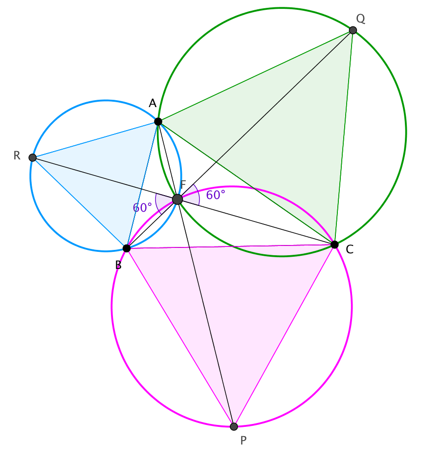

Fysiikka (Mittaukset)
Teimme mittausta ohjeissa kuvatun menetelmän avulla ryhmäläisen kotona ja sieltä löydetyistä tavaroista. Jouduimme tekemään kaksi erillistä mittausjärjestelyä, koska ensimmäinen mittausjärjestely ei toiminut toivomusten mukaisella tavalla.
Esitämme seuraavassa osiossa mittausjärjestelyjä ja niistä saatuja tuloksia.
Pohdintoja-osiossa lisää tietoa järjestelyiden toimivuudesta ja tulosten luotettavuudesta.
Mittausjärjestelyt 1 (prototyyppi)
Käytetyt välineet
- imukuppikoukkuja (3 kpl)
- paristoja (3 kpl)
- puuvillalankaa
- magneettitaulu
- sakset
- keittiövaaka
- mittanauha

Mittauksessa 1 käytetyt välineet.
Mittaus
Ensin punnittiin kaikkia paristoja erikseen varmistamaan, että punnuksina toimivat paristot todella olivat yhtä painavia. Todettiin, että jokaisen pariston massa on 24 g. Seuraavaksi asetettiin imukuppikoukut magneettitauluun mielivaltaisesti siten, että ne muodostivat teräväkulmaisen kolmion.
Tämän jälkeen leikattiin puuvillalangasta kolme yhtä pitkää pätkää (40 cm). Langanpätkien toiset päät sidottiin yhteen solmuksi. Jokaisen langanpätkän toiseen päähän kiinnitettiin paristo niin, että jokaisesta langanpätkästä meni kiinnittämiseen yhtä paljon lankaa. Tällä tavalla varmistettiin, että jokaisen langanpätkä edelleen oli yhtä pitkä.


Lopputulos oli tämän näköinen:

Jouduttiin keksimään uusi mittausjärjestely, joka esitetään seuraavassa osiossa.
Mittausjärjestelyt 2 (toimiva)
Käytetyt välineet
- nauloja (3 kpl)
- muovisia ompelukoneen puolia (3 kpl)
- paristoja (3 kpl)
- puuvillalankaa
- seinä
- kirja
- kaksipuolista teippiä (asennusteippi tarkoitettu esineiden kiinnittämiseen seinään)
- vasara
- mittanauha

Mittauksessa 2 käytetyt välineet.
Mittaus
Käytettiin samoja paristoja kuin ensimmäisessä mittausjärjestelyssä.Koska ne ovat yhtä painavia, ne toimivat punnuksina tässäkin mittauksessa. Käytettiin myös edellisen mittausjärjestelyn punnusjärjestelmää (lankoja + paristoja).

Hakattiin naulat vasaralla kirjaan kiinni mielivaltaisesti siten, että ne muodostivat teräväkulmaisen kolmion. Kirjan takapuolelle laitettiin kaksipuolista teippiä, jotta kirja pysyisi seinään kiinni.


Kun kirja oli kiinnitetty seinään, laitettiin ompelukoneen puolat nauloihin. Kuten edellisessä mittauksessa laitettiin punnusjärjestelmä kiinni ompelukoneen puoliin niin, että jokainen lanka oli kierretty yhden kierroksen verran puolan ympärillä.

Lopputulos oli tämän näköinen:

Tässä mittausjärjestelyssä langat pääsivät paljon paremmin liikkumaan puolien ansiosta ja huomattiin, että järjestelmä todellakin meni takaisin tasapainotilaan, kun jokin massoista siirrettiin ylös tai alas.
Teoriaosuus (Fermat’n piste fysiikassa)
Tässä osiossa ollaan lähestytty Fermat’n lyhyimmän reitin ongelmaa fysiikan näkökulmasta. Työn tarkoitus oli löytää piste F niin, että kärkien A, B C ja pisteen F välisten etäisyyksien summa AF + BF + CF on mahdollisimman pieni.
Fysikaalinen systeemi pyrkii minimoimaan energiansa ja meidän punnussystemissä tämä tapahtuu, kun potentiaalienergia minimoituu. Potentiaalienergia puolestaan minimoituu silloin, kun painojen (paristojen) ja kolmion kärkien välimatkojen summa on suurimmillaan, siis kun painot vetävät mahdollisimman pitkän pituuden lankaa kolmion ulkopuolelle ja tällöin ovat mahdollisimman lähellä lattiaa (nollatasoa). Narujen yhteispituus on vakio, joten potentiaalienergia minimoituu silloin, kun luotilangan yhteispituus kolmion sisällä on minimaalinen. Matematiikkaosiossa esitetyistä tuloksista tiedämme, että tämä tapahtuu silloin, kun solmukohta on Fermat’n pisteessä F.
Ideaalitapauksessa mittausjärjestelyn pitäisi olla täysin kitkaton ja sen lisäksi vaakatasossa (esim. kattoon kiinnitetty). Löydät simulaation alla olevan painikkeen kautta.
Loppuanalysointi (mittausjärjestely 2)
Solmukohta pitää ideaalitapauksessa sijoittua Fermat’n pisteeseen (kuvassa piste F), mutta todellisuudessa ne eivät täysin yhdy. Tämä johtuu luultavasti siitä, että järjestelmämme ei ole ihan kitkaton ja siksi systeemi ei mene kokonaan takaisin tasapainotilaan eli stabiiliin tilaan paristojen siirtämisen jälkeen. Mittausten aikana huomattiin myös, että ainakin yksi nauloista oli vinossa, mikä varmasti vaikutti puolan pyörimiseen ja mittaustulosten luotettavuuteen. Myös valinta käyttää paristoja punnuksina on voinut vaikuttaa tuloksen luotettavuuteen, sillä lanka oli kiinnitetty paristojen keskeltä (massan jakautuminen).

Vertasimme mittaustuloksiamme ideaalitapaukseen GeoGebra-simulaation avulla. Kuvassa on esitetty niiden yhteensopivuus